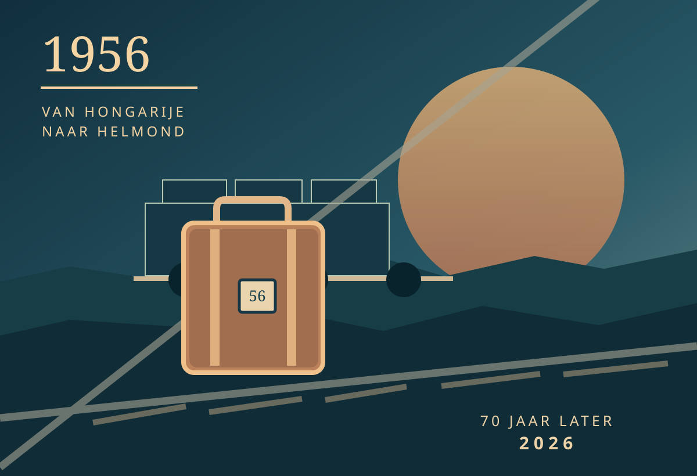

1956 — 2026 · 70 jaar geleden
Van Hongarije
naar Helmond.
139 mannen ontvluchtten het geweld in Hongarije en kwamen in november 1956 terecht in een kamp bij Someren-Eind. In Helmond vonden zij werk, een thuis of een vertrekpunt voor een nieuw bestaan aan de andere kant van de wereld.
Gepubliceerd op 20 november 2026 · Herdenking van 21 november 1956

Op woensdagmiddag 21 november 1956 arriveerde een groep van 139 Hongaarse mannen bij een voormalig Rijkswerkkamp in de buurt van Sluis 12 in Someren-Eind. Ze hadden hun vaderland verlaten na het neerslaan van de Hongaarse Opstand door de Sovjet-Unie. Hun aankomst zou ook een nieuw hoofdstuk in de geschiedenis van Helmond worden.
Van opstand naar onzekerheid
Toen Sovjettroepen in november 1956 de Hongaarse volksopstand met geweld neersloegen, vluchtten veel Hongaren naar Oostenrijk. Nederland besloot duizenden vluchtelingen op te nemen. Een groep van 139 jonge mannen kwam via de opvang in Utrecht naar het kamp bij Someren-Eind.
De ontvangst was hartelijk. Bij het kamp wapperden Nederlandse en Hongaarse vlaggen. De eenvoudige barakken waren opgeknapt om de nieuwkomers een welkom te geven. Maar een veilige slaapplek was niet voldoende. De mannen wilden vooral hun leven weer opbouwen.
De Helmondse industrie had hen nodig
Helmond was in de jaren vijftig een stad van textiel en metaal. Veel bedrijven zochten geschoolde arbeidskrachten. Onder de Hongaren bevonden zich monteurs, lassers, draaiers, elektriciens en timmerlieden. De Nederlandse overheid en werkgevers zagen de mogelijkheid om vluchtelingen aan werk te helpen en tegelijkertijd tekorten aan vakmensen te verkleinen.
Op 10 december 1956, nog geen drie weken na hun aankomst bij Someren-Eind, begonnen de mannen te werken. Bij de toenmalige katoendrukkerij P.F. van Vlissingen & Co — het latere Vlisco — gingen volgens Erfgoed Brabant veertig Hongaren aan de slag. Andere mannen vonden een baan bij onder meer Begemann, Diddens & Van Asten en Everts & Van der Weijden.
Een nieuw bestaan tussen twee werelden
Werkgevers en inwoners hielpen bij het vinden van kostgezinnen, werkkleding en taallessen. De stap was groot: een ander land, een onbekende taal en vaak werk dat niet aansloot bij de eerdere vakopleiding. Achter het optimisme gingen ook heimwee, onzekerheid en ervaringen met geweld schuil.
De persoonlijke verhalen zijn treffend. Jószef Falvay, een ervaren automonteur, kwam aanvankelijk in een drukkerij terecht. Via avondcursussen wist hij later alsnog als machinemonteur aan de slag te gaan. Gyula Maráczi leerde Nederlands met behulp van een zelfgemaakt woordenboekje en de hulp van zijn omgeving. Zulke voorbeelden maken duidelijk hoe veel veerkracht een nieuw begin vergde.
Van Helmond opnieuw de wereld over
Niet iedereen bleef. In de jaren na 1956 vertrokken verschillende mannen naar Canada, de Verenigde Staten, Australië en Nieuw-Zeeland. Sommigen bouwden in Helmond een gezin op en trouwden met Helmondse vrouwen. Volgens het onderzoek van Erfgoed Brabant woonde rond 1960 naar schatting nog ongeveer een derde van de oorspronkelijke groep in Helmond.
Hun verhaal past bij het thema Van de Aa naar de wereld: internationale gebeurtenissen brachten mensen naar onze regio, en vanuit Helmond liep hun levensweg vervolgens verder naar andere continenten. De verbinding tussen Helmond en de wereld ontstond niet alleen in fabrieken, maar vooral ook tussen mensen.
Een verhaal dat na zeventig jaar nog raakt
Op 21 november 2026 is het precies zeventig jaar geleden dat de groep in Someren-Eind aankwam. Het verhaal laat zien hoe opvang, arbeid en persoonlijke contacten deel werden van de naoorlogse geschiedenis van Helmond. Het herinnert ook aan de moeilijke keuzes die mensen moeten maken wanneer zij hun land ontvluchten.
Gebaseerd op historisch onderzoek
Deze tekst is een eigen, beknopte bewerking van historische feiten uit het artikel Hongaarse arbeiders in Helmond van Freke Sens (29 september 2021), gepubliceerd door Erfgoed Brabant Verhalen. Het oorspronkelijke artikel bevat interviews, archiefmateriaal en foto's. Raadpleeg dit artikel voor de uitgebreide geschiedenis en bronverwijzingen.
Lees het oorspronkelijke onderzoek bij Erfgoed Brabant ↗
De foto’s in het oorspronkelijke artikel zijn niet overgenomen, omdat daarbij rechten van archieven en/of families gelden. De illustratie bovenaan is speciaal voor Helmond850 gemaakt en verbeeldt geen specifieke historische gebeurtenis.
Van deze geschiedenis naar de wereldkaart.
Ook internationale handel, sport, familiegeschiedenissen en andere ontmoetingen verbinden Helmond met de wereld.